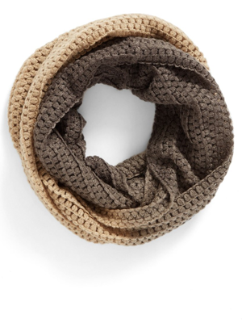
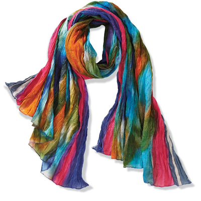
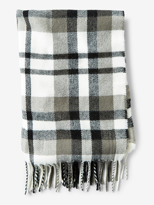
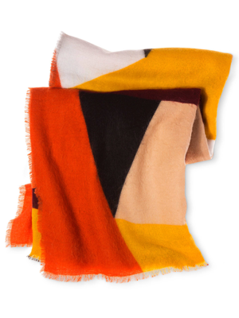
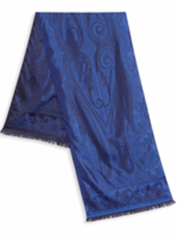
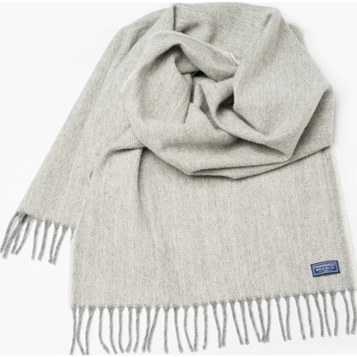

Scarves
Reversible Plaid
Two classic patterns in one great look: This supersoft and cozy reversible scarf instantly doubles your street-style cred. 100% acrylic.
$26.99
Wool Cabinet Knit
Warm yourself with this women's natural cable knit scarf, crafted from 100% Merino wool. Imported.
$26.99
Northern Lights
Handmade by women in Agra, sales provide medical and educational support in this remote area of India. Crinkly 100% cotton.
$26.99
Ombre Infinity
Handmade by women in Agra, sales provide medical and educational support in this remote area of India. Crinkly 100% cotton.
$26.99
Fringed Plaid
Generously sized, extra soft and featuring a dazzling fringe, this scarf is rendered in a versatile gray, black and white plaid. Expertly beat the cold with style. 100% acrylic.
$18.99
Multi-Color Scarf
Handmade by women in Agra, sales provide medical and educational support in this remote area of India. Crinkly 100% cotton.
$11.99
Etro Paisley-Print Silk
Luxurious silk scarf with subtle paisley pattern. 100% silk
$249.99
Ashby Twill
Faribault brings you the Ashby Twill Scarf in Natural. Woven with a 'broken' twill technique, the Ashby Twill Scarf has a slight zigzag texture. Made in USA, this timeless scarf is crafted with luxurious merino wool and finished with heather gray fringe. 100% Merino wool
$26.99